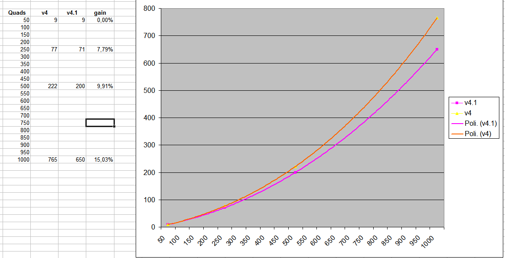

There are few things to do but I have tried and I have done the follow:
- The SET/A is faster if use costant then I have removed the variable @
- Remove unused variables, move at bottom of environment less used variables. N_FORMULA->_FORMULA Operator->_Operator
- Keep clean the environment set Oper2=
- When the dos create a new environment that is empty it recreate some variables. COMSPEC , PATHEXT, PROMPT
I have keep clean the environment.
With this, for high number of Quads, I have free about 15% of execution time.
time is in second

the new version 4.1
Code: Select all
@if defined talk (echo on) else (echo off)
setlocal EnableDelayedExpansion
if "%1" equ "ArctanLoop" goto ArctanLoop
echo pi.bat - By Don Cross - http://cosinekitty.com
REM Empty the environment
for /F "delims=" %%a in ('where sort') do set "sort=%%a"
(
for /F "delims==" %%v in ('set') do set "%%v="
set "sort=%sort%"
)
REM Define the number of groups = 25 Quads = 100 digits
set /A A_NumGroups = 2
Rem SET/A is faster with constants
rem set /A @ = 10000
rem Remove unused variables, move at bottom of environment less used variables. N_FORMULA->_FORMULA Operator->_Operator
rem set /A A_NumQuads = A_NumGroups*25, A_MaxQuadIndex = A_NumQuads-1
call :CreateMacros
echo %time% - started
call :PiEngine 48 18 32 57 -20 239
call :PiEngine 16 5 -4 239
goto :EOF
:PiEngine
REM call :SetToInteger Pi 0
copy /Y Zero.txt Pi.txt > NUL
set "_Formula="
:PiTermLoop
call :ArctanRecip PiTerm %2
if %1 lss 0 (
REM call :MultiplyByInteger PiTerm -%1
set /A "#=-%1,'=0"
(for /F "tokens=1-26" %%A in (PiTerm.txt) do (
set /A "%M_MultiplyByInteger#%"
echo %%A%M_Result%
)) > Result.txt
del PiTerm.txt & ren Result.txt PiTerm.txt
REM call :Subtract Pi PiTerm
set "'=0"
< PiTerm.txt (
for /F "tokens=1-26" %%A in (Pi.txt) do (
set /P "oper2="
for /F "tokens=1-26" %%a in ("!oper2!") do (
set /A "%M_Subtract%"
)
echo %%A%M_Result%
)) > Result.txt
del Pi.txt & ren Result.txt Pi.txt
set "_Operator=-"
) else (
REM call :MultiplyByInteger PiTerm %1
set /A "#=%1,'=0"
(for /F "tokens=1-26" %%A in (PiTerm.txt) do (
set /A "%M_MultiplyByInteger#%"
echo %%A%M_Result%
)) > Result.txt
del PiTerm.txt & ren Result.txt PiTerm.txt
REM call :Add Pi PiTerm
set "'=0"
< PiTerm.txt (
for /F "tokens=1-26" %%A in (Pi.txt) do (
set /P "oper2="
for /F "tokens=1-26" %%a in ("!oper2!") do (
set /A "%M_Add%"
)
echo %%A%M_Result%
)) > Result.txt
del Pi.txt & ren Result.txt Pi.txt
set "_Operator=+"
)
Rem Keep clean the environment
set Oper2=
if not defined _Formula (
set "_Formula=pi = %1*arctan(1/%2)"
) else (
set "_Formula=%_Formula% %_Operator% %#%*arctan(1/%2)"
)
shift
shift
if "%1" neq "" goto PiTermLoop
call :Print Pi
echo %time% - finished %_Formula%
exit /B
:ArctanRecip %1 = PiTerm *always*
REM call :SetToInteger PiTerm 1
copy /Y OneR.txt PiTerm.txt > NUL
REM call :DivideByInteger PiTerm %2
set /A "#=%2,'=0"
(for /F "tokens=1-26" %%A in (PiTerm.txt) do (
set /A "%M_DivideRbyInteger#%"
echo %%A%M_Result%
)) > AR_Recip.txt
REM call :CopyValue AR_Recip PiTerm
"%sort%" AR_Recip.txt /O PiTerm.txt
set /A _AR_Toggle = -1, _AR_K = 3
REM Re-execute the code starting at ArctanLoop label in a new cmd.exe context
for %%a in ("%sort%") do "%%~DPacmd.exe" /D /C "%~F0" ArctanLoop %2
exit /B
:ArctanLoop
(
REM Remove the macros from the environment after they have been expanded
for /F "delims==" %%v in ('set M_') do set "%%v="
Rem Clean up the environment
set "A_NumGroups="
set COMSPEC=
set PATHEXT=
set PROMPT=
set SORT=
for /L %%? in ( ) do (
REM call :DivideByInteger AR_Recip %2
set /A "#=%2,'=0"
(for /F "tokens=1-26" %%A in (AR_Recip.txt) do (
set /A "%M_DivideRbyInteger#%"
echo %%A%M_Result%
)) > Result.txt
REM call :DivideByInteger AR_Recip %2
set "'=0"
(for /F "tokens=1-26" %%A in (Result.txt) do (
set /A "%M_DivideRbyInteger#%"
echo %%A%M_Result%
)) > AR_Recip.txt
REM call :CopyValue AR_Term AR_Recip
copy /Y AR_Recip.txt AR_Term.txt > NUL
REM call :DivideByInteger AR_Term !AR_K!
set /A "#=_AR_K,'=0, AR_Term=0"
(for /F "tokens=1-26" %%A in (AR_Term.txt) do (
set /A "%M_DivideRbyInteger#%"
set /A "AR_Term+=%M_Sum%"
echo %%A%M_Result%
)) > Result.txt
REM Exit from the infinite FOR /L loop (while loop)
if !AR_Term! equ 0 exit
"%sort%" Result.txt /O AR_Term.txt
if !_AR_Toggle! lss 0 (
REM call :Subtract PiTerm AR_Term
set "'=0"
< AR_Term.txt (
for /F "tokens=1-26" %%A in (PiTerm.txt) do (
set /P "oper2="
for /F "tokens=1-26" %%a in ("!oper2!") do (
set /A "%M_Subtract%"
)
echo %%A%M_Result%
)) > Result.txt
del PiTerm.txt & ren Result.txt PiTerm.txt
) else (
REM call :Add PiTerm AR_Term
set "'=0"
< AR_Term.txt (
for /F "tokens=1-26" %%A in (PiTerm.txt) do (
set /P "oper2="
for /F "tokens=1-26" %%a in ("!oper2!") do (
set /A "%M_Add%"
)
echo %%A%M_Result%
)) > Result.txt
del PiTerm.txt & ren Result.txt PiTerm.txt
)
rem Keep clean the environment
set oper2=
set /a _AR_K += 2, _AR_Toggle *= -1
))
exit /B
:Print
echo/
< NUL (
set /P "=%1 = "
set "line=0"
for /F "tokens=1-26" %%A in ('"%sort%" /R %1.txt') do (
set /A "line+=1,%M_PrintAdjust%"
if !line! equ 1 (
set /P "=%M_PrintFormat:!Z:~1!=!Z:~-1!.%"
) else if !line! lss %A_NumGroups% (
set /P "=%M_PrintFormat%"
) else (
set /P "=%M_PrintFormat:!C:~1!!B:~1!=%"
)
))
echo/
echo/
exit /B
REM $Log: pi.bat,v $
REM Revision 1.2 2007/09/06 21:49:15 Don.Cross
REM Added time stamps and display of formula.
REM
REM Revision 1.1 2007/09/06 21:12:36 Don.Cross
REM Batch file for calculating pi
REM
:CreateMacros
set "n="
for /L %%i in (2,1,25) do set "n=!n!0 "
set /A "i=100+A_NumGroups"
(
echo !i:~1! %n%1
for /L %%i in (2,1,%A_NumGroups%) do (
set /A i-=1
echo !i:~1! %n%0
)
) > OneR.txt
set /A "i=101"
(for /L %%i in (1,1,%A_NumGroups%) do (
echo !i:~1! %n%0
set /A i+=1
)) > Zero.txt
set "upCase=A B C D E F G H I J K L M N O P Q R S T U V W X Y Z"
set "lowCase=a b c d e f g h i j k l m n o p q r s t u v w x y z"
REM One-char variables: $=Digit, '=Carry, @=10000, #=int number for multiply/divide
set "M_MultiplyByInteger#="
for %%i in (%upCase:~2%) do (
set "M_MultiplyByInteger#=!M_MultiplyByInteger#!,$='+%%%%i*#,%%i=$%%10000,'=$/10000"
)
set "M_MultiplyByInteger#=!M_MultiplyByInteger#:~1!"
set "M_DivideRbyInteger#="
for %%i in (%upCase:~2%) do (
set "M_DivideRbyInteger#=$='*10000+%%%%i,%%i=$/#,'=$%%#,!M_DivideRbyInteger#!"
)
set "M_DivideRbyInteger#=!M_DivideRbyInteger#:~0,-1!"
set "M_Add="
set "M_Sum="
set "lowCase2=%lowCase:~2%"
for %%i in (%upCase:~2%) do (
for /F "tokens=1*" %%j in ("!lowCase2!") do (
set "M_Add=!M_Add!,$='+%%%%i+%%%%j,%%i=$%%10000,'=$/10000"
set "lowCase2=%%k"
)
set "M_Sum=!M_Sum!+%%%%i"
)
set "M_Add=%M_Add:~1%"
set "M_Sum=%M_Sum:~1%"
set "M_Subtract="
set "lowCase2=%lowCase:~2%"
for %%i in (%upCase:~2%) do (
for /F "tokens=1*" %%j in ("!lowCase2!") do (
set "M_Subtract=!M_Subtract!,$=%%%%i-%%%%j+','=$>>31,%%i=$-'*10000"
set "lowCase2=%%k"
)
)
set "M_Subtract=%M_Subtract:~1%"
set "M_Result="
for %%i in (%upCase:~2%) do (
set "M_Result=!M_Result! ^!%%i^!"
)
set "M_PrintAdjust="
set "M_PrintFormat="
for %%i in (%upCase:~2%) do (
set "M_PrintAdjust=!M_PrintAdjust!,%%i=10000+%%%%i"
set "M_PrintFormat=^!%%i:~1^!!M_PrintFormat!"
)
set "M_PrintAdjust=%M_PrintAdjust:~1%"
set "upCase="
set "lowCase="
exit /B
Francesco